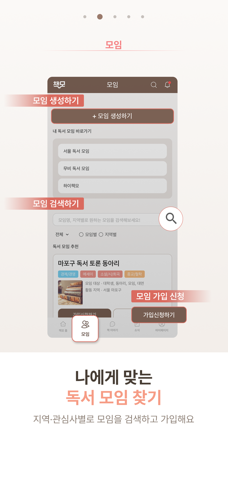
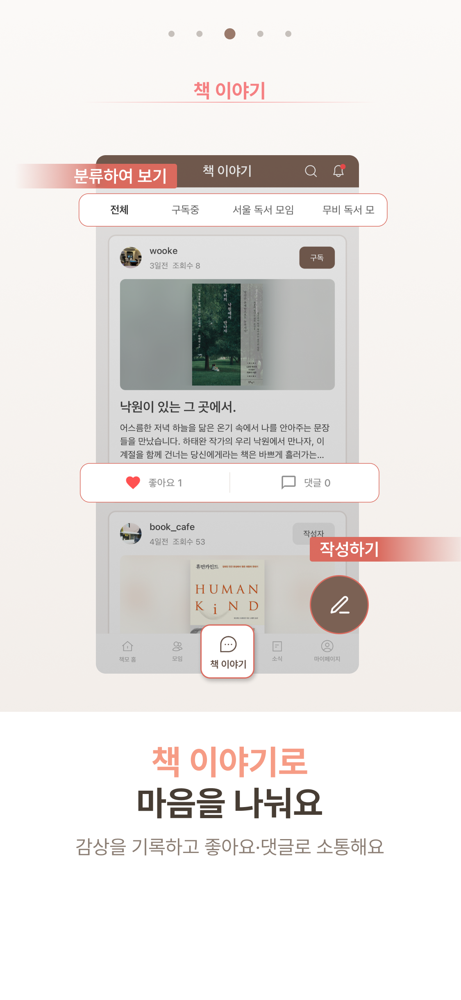
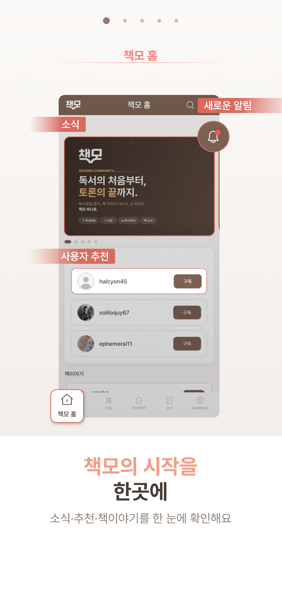
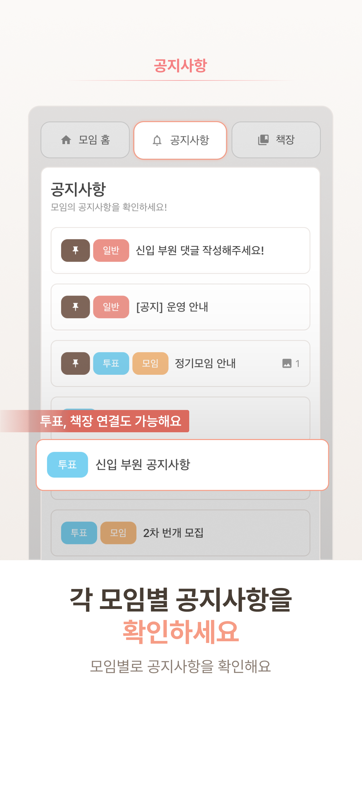
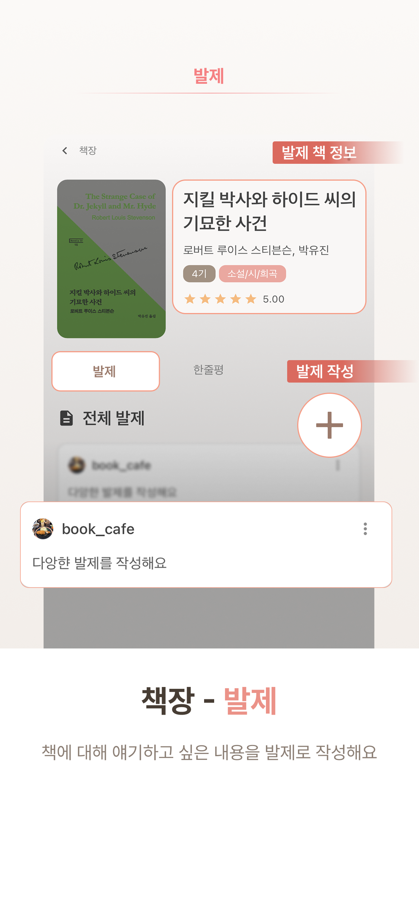
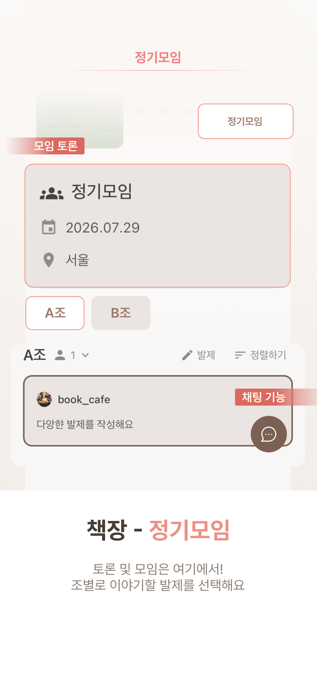
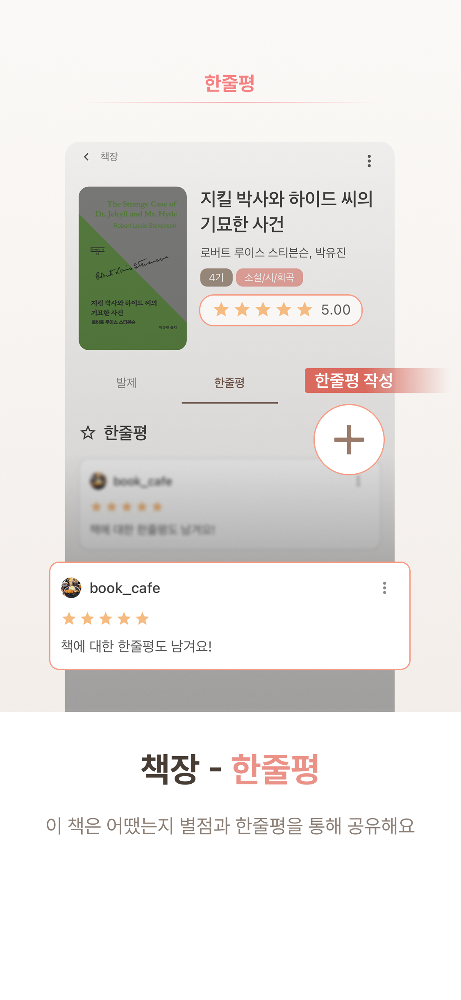

공지부터 도서 선정, 정기모임, 발제와 기록까지.
운영의 반복을 줄이고 좋은 독서 경험을 오래 남기는 방법을 소개합니다.
운영진의 반복 업무와 정보 분산
운영진과 회원 모두의 변화
한 달 운영 예시와 시작 방법
좋은 대화를 준비하는 시간보다 전달과 정리에 더 많은 손이 갑니다.
각 도구의 정보를 다시 모으고 설명하는 일이 결국 운영진에게 돌아옵니다.
일정과 안건을 알리고, 공지 안에서 회원 의견과 투표 결과를 함께 확인합니다.
선정도서를 중심으로 발제와 한줄평을 쌓아 모임의 독서 기록을 남깁니다.
정기모임 정보, 조 편성, 조별 발제와 채팅을 하나의 모임 안에서 운영합니다.
가입 신청과 회원 상태를 관리하고 개설자와 운영진의 역할을 나눌 수 있습니다.


각 단계의 결과가 다음 운영에 다시 쓰이는 모임 기록이 됩니다.
소개와 운영 정보를 등록하고 가입 신청을 받습니다.
모임 · 회원책장을 만들고 후보 도서와 읽을 책을 정리합니다.
책장일정과 안건을 알리고 회원의 선택을 모읍니다.
공지 · 투표조를 편성하고 발제 진행 상태와 순서를 확인합니다.
정기모임 · 조댓글과 소속 조 채팅으로 모임의 대화를 이어갑니다.
댓글 · 조 채팅발제와 별점이 포함된 한줄평을 책장에 남깁니다.
발제 · 한줄평
모임 홈과 공지 탭에서 운영진이 남긴 최신 안내를 찾아봅니다.
도서와 일정에 대한 의견을 남기고 투표 결과를 함께 확인합니다.
읽은 책을 중심으로 발제와 별점, 짧은 감상을 기록합니다.
정기모임 전후에도 소속 조 채팅으로 필요한 대화를 이어갑니다.
새로운 운영 체계를 한 번에 도입하지 않아도, 한 권의 책과 한 번의 정기모임부터 시작할 수 있습니다.
공지와 발제, 정기모임과 한줄평이 각각 흩어지지 않고 하나의 모임 안에서 이어집니다.




동아리 소개와 기본 운영 정보를 등록해 모임 공간을 만듭니다.
가입 신청을 승인하고 개설자와 운영진의 역할을 나눕니다.
다음 선정도서와 일정 공지, 필요한 투표부터 책모에서 시작합니다.
아니요. 공지와 책장, 기록부터 책모에 모으고 기존 대화 채널은 동아리 상황에 맞춰 단계적으로 정리할 수 있습니다.
다음 모임부터 새 기록을 쌓아도 됩니다. 다시 활용할 중요한 발제와 도서 정보만 선택적으로 정리하면 됩니다.
개설자와 운영진 권한을 구분해 가입 신청, 회원, 공지, 책장과 조 편성 등의 운영 업무를 함께 관리할 수 있습니다.